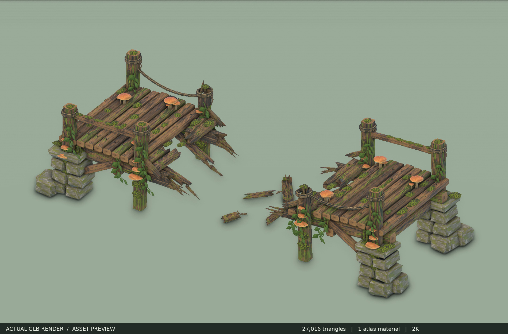
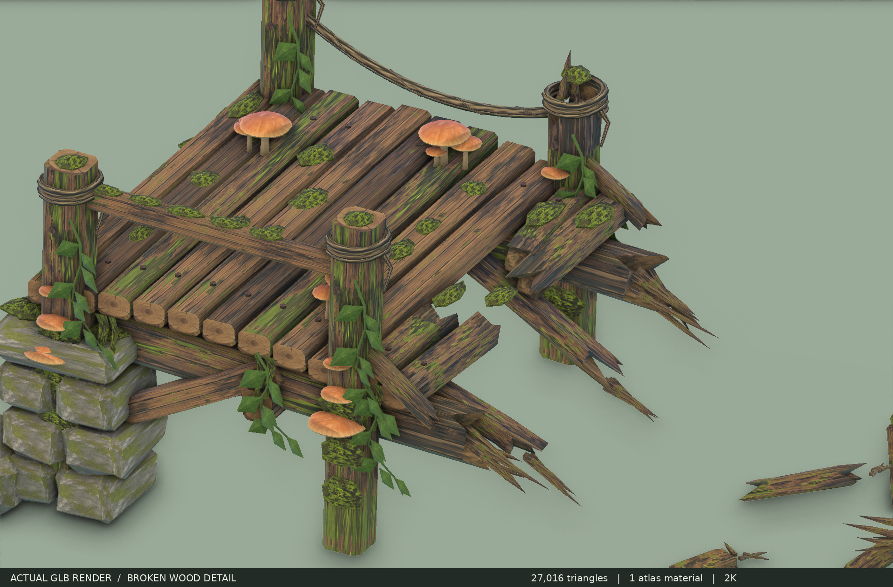
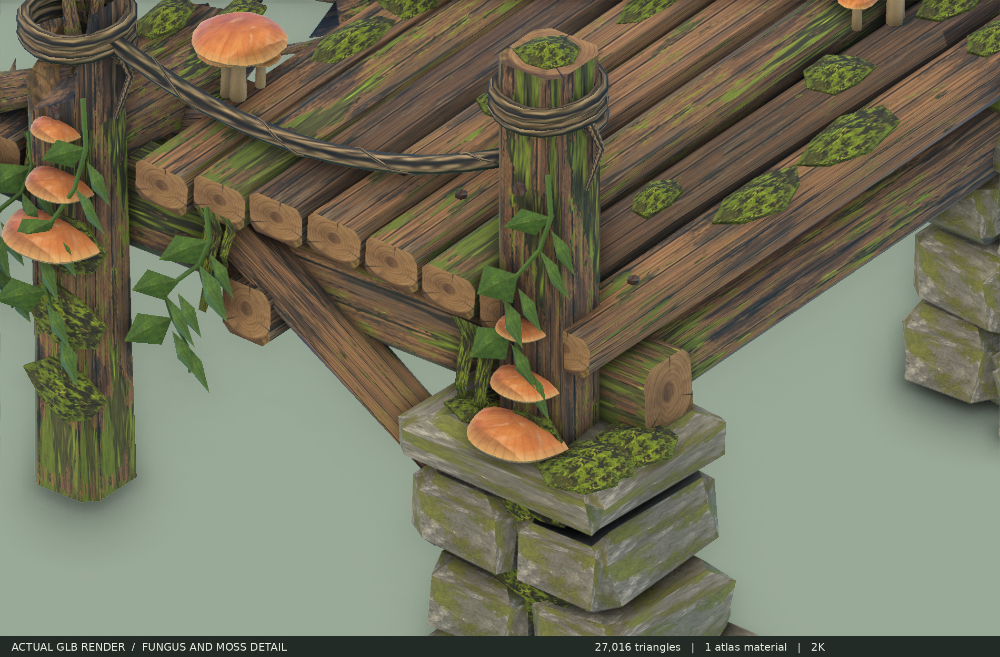
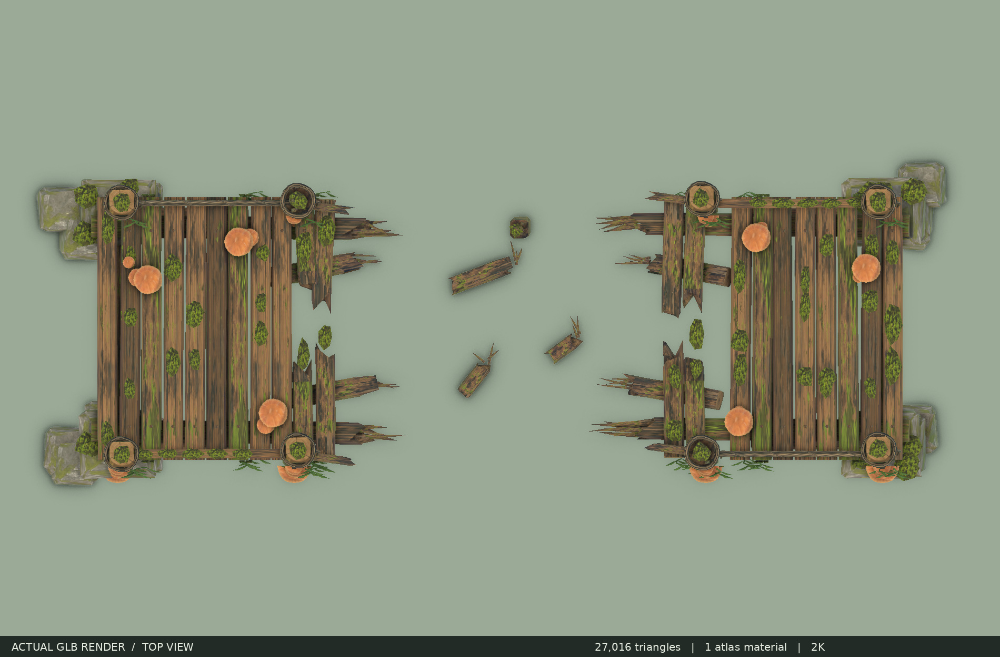

납품한 SM_BrokenBridge.glb를 다시 불러와 렌더링한 결과입니다. 콘셉트 이미지를 모델 렌더처럼 사용하지 않았습니다.
27,016 삼각형 · 재질 1개 · 2K 텍스처 내장 · 약 11.89 × 4.23 × 3.24m
완성형 GLB · 분리형 GLB · 사용 설명




VTK glTF 재가져오기 렌더. 바닥·조명은 미리보기 전용이며 모델에 포함되지 않습니다.